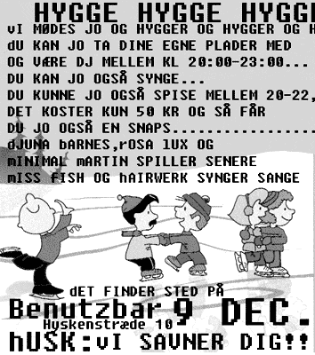

| dunst | Nyhedsbrev |
| We recommend | Torsdag den 9. December 2004 |
 |
|
| Rosa Lux og Minimal Martin
inviterer til julefrokost på Benutzbar, Hyskenstræde.
Der vil være mad og en snaps for 50 kr mellem 20:00 og 22:00.......... Ring og meld dig til på nummer: 27 16 81 75 eller 24 61 17 71. DJ's: Mellem 20:00 og 23:00 er der fri adgang til mixer pulten, så ta' endelig dine egne plader med. Derefter spiller Djuna Barnes, Rosa Lux og Minimal Maritn.... Performance: Miss Fish, Hairwerk og måske flere vil synge sange..... Håber vi ses! Kærlig hilsen Rosa Lux og Minimal Martin. |
|
| HR & FRU dunst | Lørdag den 18. December 2004 |
 |
|
| Indtil videre har 6 kandidater
meldt sig til konkurrencen. Se hvem på dunst siden. Der er stadig 4 ledige pladser. |
|
| Læs mere | |
Denne mail kan ikke besvares men hvis du vil i kontakt med os så skriv til infodunst.dk
Hvis du vil leve et kedeligt liv uden dunst så afmeld dunst Nyhedsbrev på forsiden af www.dunst.dk